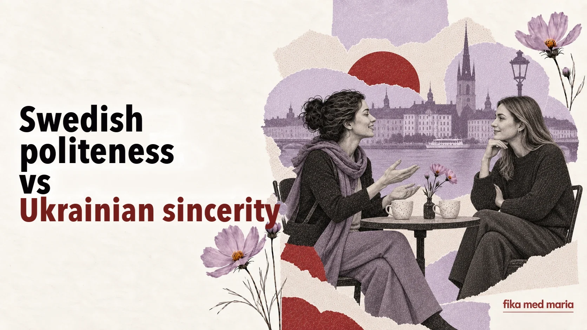

Swedish politeness can sound like indifference – and Ukrainian sincerity like pressure

A Ukrainian woman asks a new acquaintance: “Are you married? Do you have children? Why not?” She may be asking not out of curiosity but to get closer and find common ground more quickly.
The Swedish woman gives a short answer and doesn’t take the conversation any further. The Ukrainian woman thinks: “How cold she is.” The Swedish woman thinks: “Why is someone I barely know asking me such personal questions?”
Neither of them meant to offend the other. The two cultures simply define warmth, politeness and respect differently.
Distance doesn’t always mean indifference
In many situations, care in Ukraine is active: giving advice, feeding people, helping, asking questions, making sure the person really doesn’t need anything.
In Sweden, care often looks like respect for autonomy:
- not asking overly personal questions;
- not giving advice unless asked;
- not phoning out of the blue;
- letting a person say no without explaining;
- arranging to meet in advance;
- not demanding an immediate answer.
From the outside, this can seem chilly. But the logic is different: “I won’t intrude on your life until you decide to invite me in.”
An invitation is an arrangement, not a ritual
In Ukrainian, “заходьте якось у гості” (do drop in sometime) can be a way of showing you like someone, with no concrete plan behind it. In Sweden, an invitation tends to become real once there’s a date and a time.
Vi borde ses någon gång.
We should meet up sometime.
It’s a nice thing to say, but it’s not a plan yet.
Vill du komma hem till oss på middag nästa lördag?
Would you like to come to ours for dinner next Saturday?
Now that’s an invitation.
So there’s no need to take offence if nobody gets out their calendar straight after Vi borde ta en fika. But if you do want to meet, you can simply pin it down:
Ja, gärna! Passar nästa torsdag?
Advice can sound like a judgement
In a Ukrainian context, the phrase “You need to dress your child more warmly” can be an ordinary sign of care. To someone else, it can sound like a judgement on their parenting choices.
Softer Swedish phrasing leaves the choice to the person you’re talking to:
- Vill du höra hur jag brukar göra? – Would you like to hear what I usually do?
- Jag vet inte om det passar dig, men… – I don’t know if it will suit you, but…
- Säg till om du vill ha hjälp. – Let me know if you’d like help.
The last phrase is important: the person offers help but doesn’t take control.
Saying no without a long excuse
For many Ukrainians, a short “I can’t” feels rude, so we explain our reasons. In the Swedish way of communicating, it’s enough to say:
Tack för inbjudan, men jag kan tyvärr inte.
Thank you for the invitation, but unfortunately I can’t.
You don’t always need to give a detailed account of all the circumstances. A boundary can be polite even without an excuse.
How not to turn cultural differences into stereotypes
Not all Ukrainians ask personal questions. Not all Swedes arrange to meet three weeks in advance. Temperament, generation, city, family and the specific relationship always matter more than a national pattern.
Culture doesn’t define a person. It only hints at why the same action can mean different things.
Rather than asking “Why are Swedes so cold?”, it’s more useful to ask:
What signal of respect is this person trying to send – even if I’m used to seeing respect shown differently?
You want to offer a new acquaintance help with her move without making her feel pressured. Which phrase is best?
- Jag kommer i morgon och hjälper dig.
- Säg till om du vill ha hjälp med flytten.
- Du klarar inte det själv.
Show answer
Correct answer: 2.
The goal isn’t to “become Swedish”. The goal is to understand the other person’s code and to have enough language tools to stay yourself. That is exactly what we practise at Fika med Maria. Swedish courses.
Is it impolite to ask Swedes personal questions?
It depends on how close you are. When you first get to know someone, it’s better to let them decide for themselves how much they want to share about their private life.
How do you show warmth in Swedish?
By listening, remembering what you’ve been told, sticking to what you’ve agreed, offering concrete help and respecting the answer.